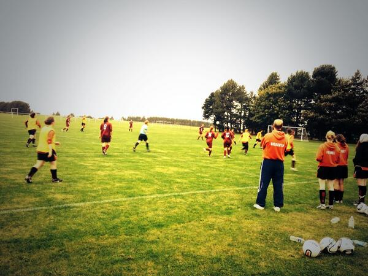

Amateur Football Club
Welcome to the website of the University of Dundee Amateur Football Club!
Here you can find information on the Men's and Women's Football Clubs at the Dundee University Sports Union. Please use the navigation bar above to navigate the site.
Looking for more information on the AFC? Check out the 'About' and 'FAQ' pages, and browse photos of the AFC's games and teams on the 'Media' page.
Interested in joining? See the 'Contact Us' page.
